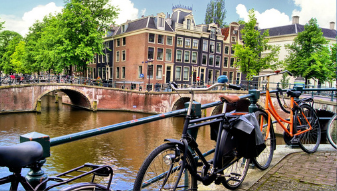
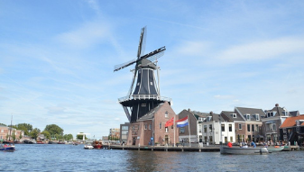
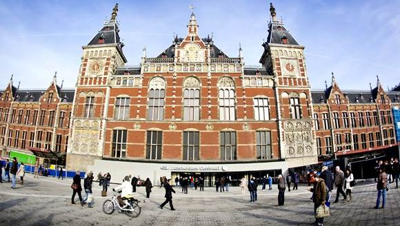
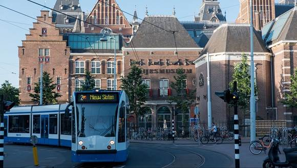
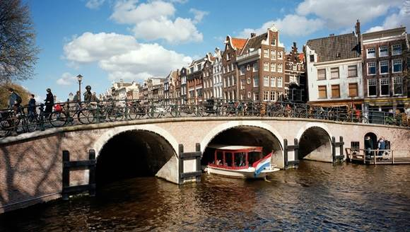
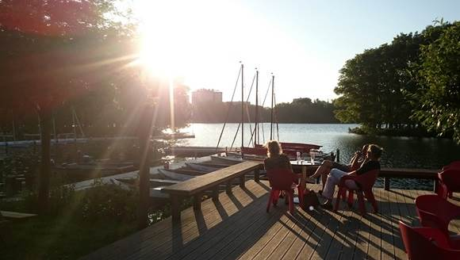
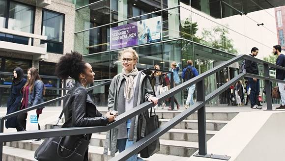
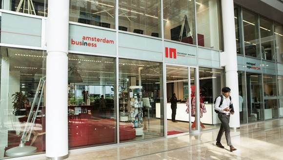

Access to Amsterdam is currently limited. Keep in mind that restaurants, bars, shops and nightclubs may be closed. Stay safe and always adhere to the additional safety regulations. Read more
Coronavirus may impact your visit to Amsterdam
Discover Amsterdam safely
Atumn day tips from Amsterdam
Plan your visit
Plan your trip
Planning a trip to Amsterdam? Find all the resources you need to get started - from accommodation and excursions to renting a car or using public transport.
Plan your trip to Amsterdam
See and do
With world-class museums, quirky festivals, theatre, live music, laid-back bars and delightful restaurants, there's never a shortage of things to do!
Explore Amsterdam
Explore Amsterdam
11 outdoor and adventure activities in Amsterdam
It’s not all urban in Amsterdam: the proximity to the coast, bountiful canals and forests allow for tonnes of outdoor adventure in the Dutch capital.
Read more
Top 20 things to do in Amsterdam
With its picturesque canal network, rich history and thrumming cultural scene, the capital of the Netherlands is one of the world’s most vibrant...
Read more
Three days out in the Amsterdam Area
If you've been to Amsterdam before and seen the highlights, or you just have a passion for discovering the unknown, then head out of the city and into...
Read more
Your guide to living, working & investing in Amsterdam
About Amsterdam
Learn all about Amsterdam, including its rich history, the development of its tolerant society and how it became such a bustling hub of commerce.
About Amsterdam
Living
Look up official information for expats about permits, registration, visas, housing, healthcare, the 30% tax ruling and more.
Living in Amsterdam
Business
Be part of a thriving business ecosystem – alongside cutting-edge startups, international corporations, social entrepreneurs and renowned innovation.
Do business in Amsterdam
Work
Take your career to the next level with Amsterdam's wide variety of job opportunities across a range of sectors. For help with finding a job contact us.
Working in Amsterdam
Study
Study at one of Amsterdam’s leading universities, colleges and educational institutions. Apply for bachelor, master and PhD courses in English.
Study in Amsterdam
Our network
Tap into our world-class support network for businesses, startups, locals, international newcomers, media professionals and more.